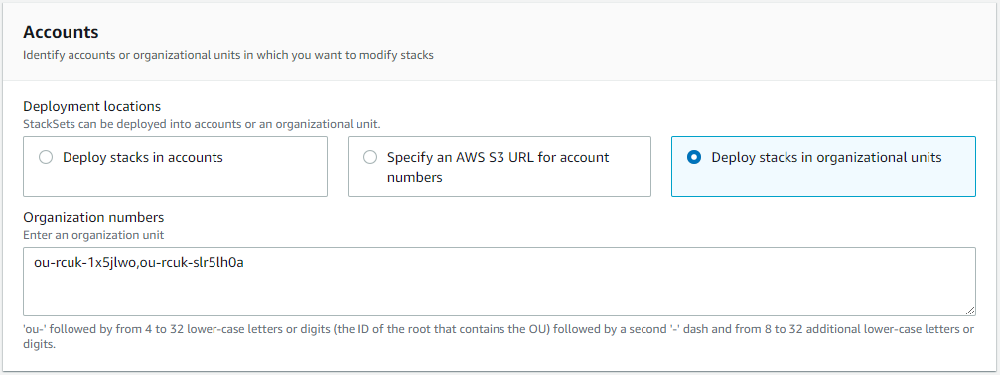
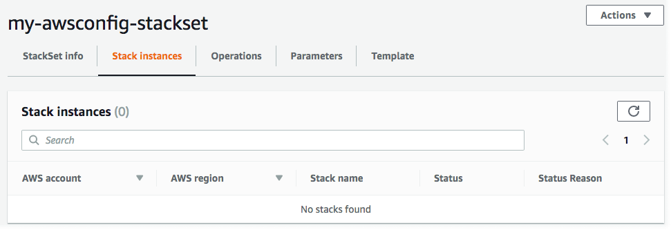

Eliminación de instancias de pila del conjunto de pilas
Puede eliminar las instancias de pila de un conjunto de pilas en la AWS Management Console o utilizando los comandos de AWS CloudFormation en la AWS CLI. En este procedimiento, eliminaremos todas las pilas.
Para un conjunto de pilas con permisos administrados por servicios, si elimina instancias de pila de una unidad organizativa (OU) de nivel superior, la unidad organizativa se elimina como destino del conjunto de pilas.
Temas
Eliminación de instancias de pila mediante AWS Management Console
Abra la consola de AWS CloudFormation en https://console.aws.amazon.com/cloudformation
. -
Elija StackSets (Conjuntos de pilas) en el panel de navegación. En la página StackSets, seleccione el conjunto de pilas creado en Creación de un conjunto de pilas.
-
Una vez seleccionado el conjunto de pilas, elija Delete stacks from StackSet (Eliminar pilas del conjunto de pilas) en el menú Actions (Acciones).

-
En la página Establecer opciones de implementación, elija las cuentas de las que desea eliminar instancias de pila.
-
[Permisos autoadministrados] En Cuentas, elija Implementar pilas en cuentas. Pegue sus números de cuenta de destino en el cuadro de texto, separando los distintos números con comas..
[Permisos administrados por servicios] En Cuentas, elija Implementar pilas en unidades organizativas. Pegue los ID de las unidades organizativas a los que se destina el conjunto de pilas.
nota
StackSets también elimina instancias de pila de todas las unidades organizativas secundarias de las unidades organizativas de destino especificadas.
 -
En Regiones de implementación, elija las regiones de las que desea eliminar instancias de pila. En este caso, Región EE.UU. Este (Norte de Virginia) y Región EE.UU. Oeste (Oregón).
-
Para Deployment options (Opciones de implementación):
-
Para Maximum concurrent accounts (Número máximo de cuentas simultáneas), mantenga los valores predeterminados de Number (Número) y 1.
-
Para Tolerancia a errores, mantenga los valores predeterminados de Número y 0.
En el área Retain stacks (Conservar pilas), mantenga el valor predeterminado deshabilitado.
Al eliminar pilas a partir de un conjunto de pilas la opción Retain stacks (Conservar pilas) permite elegir eliminar las instancias de la pila del conjunto de pilas, y guardar las pilas y sus recursos asociados. Al guardar pilas desde el conjunto de pilas, al elegir la opción Retain stacks (Conservar pilas), permanecen los recursos de la pila en su estado actual, pero la pila deja de formar parte del conjunto de pilas. Para volver a asociar una pila o agregar una pila existente a un conjunto de pilas, consulte Importación de una pila a AWS CloudFormation StackSets.
Elija Next (Siguiente).
-
-
-
En la página Review (Revisar), revise las opciones y seleccione Submit (Enviar).
-
Después de eliminar las pilas, puede comprobar si se han borrado las instancias de pila del conjunto de pilas en la página de detalles del conjunto de pilas, en la pestaña Stack instances (Instancias de pila).

Eliminación de instancias de pila mediante AWS CLI
Al actuar como administrador delegado, debe establecer el parámetro --call-as en DELEGATED_ADMIN cada vez que ejecute un comando StackSets.
--call-asDELEGATED_ADMIN
-
Ejecute el comando
delete-stack-instances. Para--stack-set-name, especifique el nombre del conjunto de pilasmy-awsconfig-stackset.Defina la tolerancia a fallos y el número máximo de cuentas simultáneas estableciendo
FailureToleranceCounten0yMaxConcurrentCounten1en el parámetro--operation-preferences, tal y como se muestra en el siguiente ejemplo. Para aplicar porcentajes en su lugar, utiliceFailureTolerancePercentageoMaxConcurrentPercentage. A efectos de este tutorial, utilizamos el número, no el porcentaje.nota
El valor
MaxConcurrentCountdepende del valor deFailureToleranceCount.MaxConcurrentCountserá como máximo, uno más queFailureToleranceCount.Dado que
--retain-stackses un parámetro obligatorio dedelete-stack-instances, si no desea conservar (guardar) pilas, agregue--no-retain-stacks. En este tutorial, agregamos el parámetro--no-retain-stacks, porque no conservamos ninguna pila.[Permisos autoadministrados] Reemplace
account_IDpor las cuentas utilizadas para crear el conjunto de pilas en Creación de un conjunto de pilas.aws cloudformation delete-stack-instances --stack-set-name my-awsconfig-stackset --accounts '["0123456789012"]' --regions '["eu-west-1"]' --operation-preferences FailureToleranceCount=0,MaxConcurrentCount=1 --no-retain-stacks[Permisos administrados por servicios] Para
--deployment-targets, especifique el ID de organización (raíz) o los ID de unidad organizativa en los que creó instancias de pila.nota
StackSets también elimina instancias de pila de todas las unidades organizativas secundarias de las unidades organizativas de destino especificadas.
aws cloudformation delete-stack-instances --stack-set-name my-awsconfig-stackset --deployment-targets OrganizationalUnitIds='["ou-rcuk-1x5jlwo", "ou-rcuk-slr5lh0a"]' --regions '["eu-west-1"]' --no-retain-stacks -
Opcionalmente, una vez que haya terminado la eliminación de la pila, compruebe que las instancias de pila se eliminaron del conjunto de pilas ejecutando el comando
describe-stack-set-operationpara mostrar el estado y los resultados de la operación de eliminación de pilas. Para--operation-id, utilice el ID de operación devuelto con el comandodelete-stack-instances.aws cloudformation describe-stack-set-operation --stack-set-namestackSetName--operation-idddf16f54-ad62-4d9b-b0ab-3ed8e9example